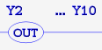
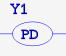
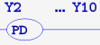
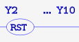
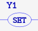
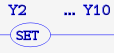
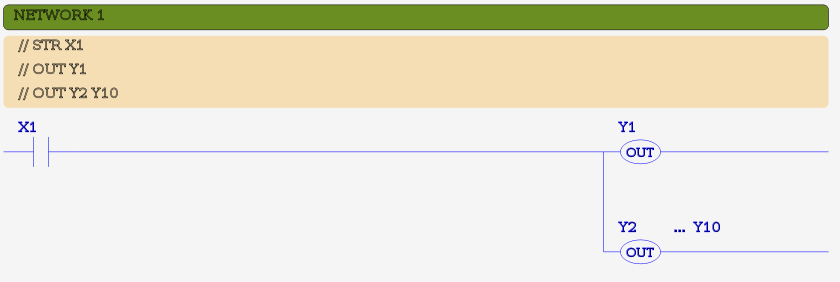
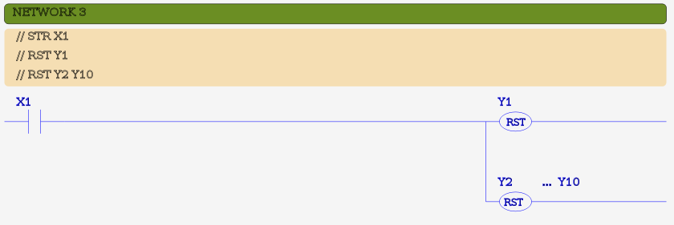
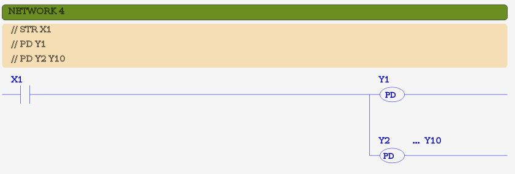

MBLogic
for an open world in automation
MBLogic
for an open world in automation
Boolean Output Instructions
Boolean output instructions output the value on the top of the logic stack to an address given as an explicit parameter. Output instructions do not modify the logic stack. This means that multiple output instructions can be used in series without the result of one instruction affecting the next.
| Instruction | Description | # Params | X | Y | C | T | CT | SC | Bit Range | Symbol |
|---|---|---|---|---|---|---|---|---|---|---|
| OUT | Output logic stack to bit | 1 | X | X | ||||||
| OUT | Output logic stack to multiple bits | 2 | X | X | X |  | ||||
| PD | Output logic stack one shot | 1 | X | X |  | |||||
| PD | Output logic stack one shot to multiple bits | 2 | X | X | X |  | ||||
| RST | Reset bit if logic stack true | 1 | X | X |  |
|||||
| RST | Reset multiple bits if logic stack true | 2 | X | X | X |  | ||||
| SET | Set bit if logic stack true | 1 | X | X |  | |||||
| SET | Set multiple bits if logic stack true | 2 | X | X | X |  |
Boolean output instructions come in two forms: single output and bit range output. The system distinguishes between the two forms by the number of parameters given.
The PD instruction is a one-shot instruction. The output will be turned on for one scan if the logic stack input is true.
Example:
// Output to a single bit. NETWORK 1 STR X1 OUT Y1 RST Y2 SET Y3 // Output to a range of bits. NETWORK 2 STR X2 OUT C1 C9 RST C10 C19 SET C20 C21 // Output using one-shot. NETWORK 3 STR X3 PD C30 PD C40 C60
Ladder Examples
The following shows examples in ladder format. Each example shows the IL code as comments, followed by the ladder equivalent.
  